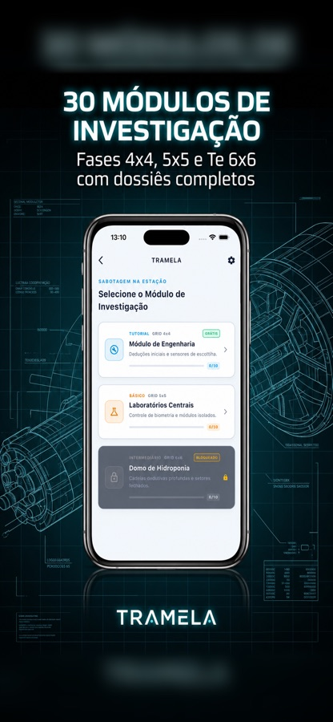
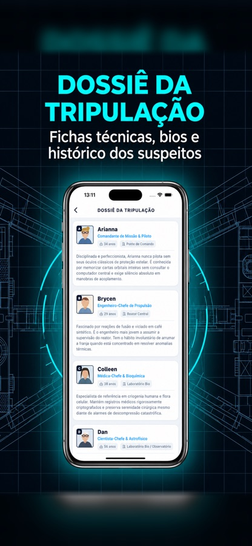

Tramela
Mistério, lógica e dedução a bordo.
Alguém sabotou o suporte de vida de um módulo da estação, e só um tripulante estava no mesmo compartimento que a vítima. Cruze logs de biometria, sensores de escotilha e câmeras para posicionar cada suspeito no tabuleiro. Um por linha, um por coluna, uma única resposta certa.


Leia as pistas. Elimine. Acuse.
Não há chute: cada caso é construído para ter exatamente uma solução alcançável só por dedução.
Estude o tabuleiro
Uma grade n×n representa os compartimentos do módulo. A vítima está numa célula fixa; os suspeitos precisam ocupar o resto, sem repetir linha ou coluna.
Aplique as pistas
Pistas absolutas, negativas, relativas ("a norte de"), de adjacência, de contagem e condicionais reduzem as posições possíveis até sobrar uma.
Aponte o culpado
Quem ficou sozinho no compartimento da vítima é o sabotador. Feche o caso e avance para o próximo módulo da estação.
30 módulos de investigação, do 4×4 ao 6×6.
Os módulos da estação — Engenharia, Laboratórios Centrais, Domo de Hidroponia e outros — agrupam fases progressivas com dossiês completos.
Um detetive de bolso.
Caso do Dia
Um caso novo por dia, o mesmo para todo mundo. Resolva, mantenha a sequência e compare no Game Center ou Play Games.
Modo Alerta Vermelho
Sobrecargas em sequência contra o relógio. Cada caso resolvido dá mais tempo; um erro custa caro.
Dossiê da tripulação
Conheça cada tripulante, seu posto e seus hábitos. Detalhes do dossiê viram pistas nos casos mais difíceis.
Solução única, sempre
O gerador só aceita um caso quando o conjunto mínimo de pistas leva a exatamente uma resposta.
Dicas quando travar
Peça uma dica para destravar o raciocínio sem entregar a resposta inteira. No Pro, elas são ilimitadas.
Trilha a bordo
Trilha sonora e efeitos que colocam você dentro da estação, com controles de som separados.
A bordo da estação.


Desarme sobrecargas em sequência contra o relógio.
Casos rápidos, um atrás do outro, com o cronômetro correndo. Ideal para quem já domina as pistas e quer testar velocidade de raciocínio — com placar e streak próprios.
- Alerta Rápido (4×4) e Sobrecarga Crítica (5×5)
- Avisos nos últimos 45 e 15 segundos
- Placar mundial separado do Caso do Dia
- Conquistas no Game Center e Play Games
Sem anúncios, dicas ilimitadas, todos os módulos.
A versão gratuita tem anúncios discretos. O Pro é uma compra única que remove todos, libera dicas ilimitadas e todos os módulos (5×5, 6×6 e futuras expansões). O pagamento é processado pela Apple ou pelo Google — nunca temos acesso aos seus dados de cartão.
- Zero anúncios
- Dicas ilimitadas
- Todos os módulos da estação
- Compra única, sem assinatura
- Apoia o desenvolvimento independente
Dificuldade técnica, sugestão de módulo ou bug?
Escreva contando o que aconteceu e em qual aparelho. Costumo responder em até 48 horas em dias úteis.